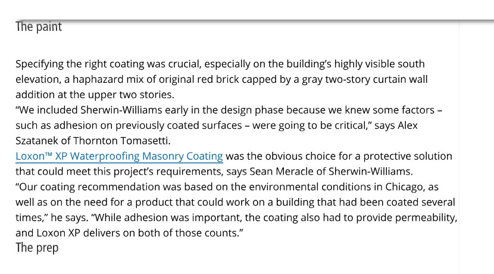

Why Sherwin-Williams matters for exterior coating work
Exterior coating work should be supported by professional product documentation, preparation requirements, and application guidance. Sherwin-Williams offers contractor-focused product support and masonry coating systems that can be reviewed for Florida exterior projects.
RDS does not treat product selection as a one-size-fits-all decision. The home, stucco condition, cracks, moisture exposure, color goals, and manufacturer specifications all matter before the final system is selected.
Loxon XP and Loxon XP IR in the RDS review direction
Loxon XP is part of the Sherwin-Williams masonry coating family and is reviewed as a professional exterior masonry coating direction where project conditions support it. Loxon XP IR is a reflective coating option that can be discussed where appropriate for the property, exposure, surface, and finish goals.
- Stucco and masonry surfaces should be inspected before product selection.
- Crack repair and surface cleaning remain important before coating work.
- Primer, sealer, or surface conditioning requirements depend on the project and manufacturer guidance.
- Reflective options are discussed carefully, without promising specific interior comfort outcomes.
- Warranty terms depend on written manufacturer requirements and proper application.
Sherwin-Williams Project Reference
Sherwin-Williams has used Loxon XP Waterproofing Masonry Coating in professional project applications where coating selection, adhesion, permeability, and surface preparation were important factors.

Professional coating systems are not only product names
Manufacturer-backed product documentation can help support a better exterior project, but the job still depends on preparation and application. A strong system includes cleaning, repair, surface conditioning where required, careful application, and final workmanship review.
Documentation matters
Product data, written terms, and specifications help guide the project direction.
Surface condition matters
Stucco, masonry, cracks, chalking, and previous coatings all affect planning.
Proper installation matters
Coating systems are only as strong as the preparation and application behind them.
Manufacturer guidance keeps the recommendation grounded.
Final product recommendations, specifications, and warranty terms are confirmed according to project conditions and manufacturer guidance.